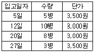

한식조리기능사 (2013-04-14 기출문제)
1과목: 식품위생 및 법규
1. 중금속에 의한 중독과 증상을 바르게 연결한 것은?
- 납중독 - 빈혈 등의 조혈장애
- 수은중독 - 골연화증
- 카드뮴 중독 - 흑피증, 각화증
- 비소중독 - 사지마비, 보행장애
(정답률: 62%)

2. HACCP의 의무적용 대상 식품에 해당하지 않는 것은?
- 빙과류
- 비가열음료
- 껌류
- 레토르트식품
(정답률: 74%)
3. 식품첨가물 중 보존료의 목적을 가장 잘 표현한 것은?
- 산도 조절
- 미생물에 의한 부패 방지
- 산화에 의한 변패 방지
- 가공과정에서 파괴되는 영양소 보충
(정답률: 82%)
4. 식품에 다음과 같은 현상이 나타났을 때 품질 저하와 관계가 먼 것은?
- 생선의 휘발성 염기질소량 증가
- 콩단백질의 금속염에 의한 응고 현상
- 쌀의 황색 착색
- 어두운 곳에서 어육연제품의 인광 발생
(정답률: 52%)
5. 미숙한 매실이나 살구 씨에 존재하는 독성분은?
- 라이코린
- 하이오사이어마인
- 리신
- 아미그달린
(정답률: 86%)
6. 내열성이 강한 아포를 형성하며 식품의 부패 식중독을 일으키는 혐기성균은?
- 리스테리아속
- 비브리오속
- 살모넬라속
- 클로스트리디움속
(정답률: 66%)
7. 식품첨가물이 갖추어야 할 조건으로 옳지 않은 것은?
- 식품에 나쁜 영향을 주지 않을 것
- 다량 사용하였을 때 효과가 나타날 것
- 상품의 가치를 향상시킬 것
- 식품성분 등에 의해서 그 첨가물을 확인할 수 있을 것
(정답률: 84%)
8. 황색 포도상구균에 의한 식중독 예방대책으로 적합한 것은?
- 토양의 오염을 방지하고 특히 통조림의 살균을 철저히 해야 한다.
- 쥐나 곤충 및 조류의 접근을 막아야 한다.
- 어패류를 저온에서 보존하며 생식하지 않는다.
- 화농성 질환자의 식품 취급을 금지한다.
(정답률: 74%)
9. 껌 기초제로 사용되며 피막제로도 사용되는 식품첨가물은?
- 초산비닐수지
- 에스테르검
- 폴리이소부틸렌
- 폴리소르베이트
(정답률: 84%)
10. 부패가 진행됨에 따라 식품은 특유의 부패취를 내는데 그 성분이 아닌 것은?
- 아민류
- 아세톤
- 황화수소
- 인돌
(정답률: 73%)
11. 출입·검사·수거 등에 관한 사항 중 틀린 것은?
- 식품의약품안전처장은 검사에 필요한 최소량의 식품 등을 무상으로 수거하게 할 수 있다.
- 출입·검사·수거 또는 장부열람을 하고자 하는 공무원은 그 권한을 표시하는 증표를 지녀야 하며 관계인에게 이를 내보여야 한다.
- 시장·군수·구청장은 필요에 따라 영업을 하는 자에 대하여 필요한 서류나 그 밖의 자료의 제출 요구를 할 수 있다.
- 행정응원의 절차, 비용부담 방법 그 밖에 필요한 사항은 검사를 실시하는 담당공무원이 임의로 정한다.
(정답률: 81%)
12. 식품위생법상 식품위생의 대상이 되지 않는 것은?
- 식품 및 식품첨가물
- 의약품
- 식품, 용기 및 포장
- 식품, 기구
(정답률: 92%)
13. 보건복지부령이 정하는 위생등급기준에 따라 위생관리상태 등이 우수한 집단급식소를 우수업소 또는 모범업소로 지정할 수 없는 자는?
- 식품의약품안전처장
- 보건환경연구원장
- 시장
- 군수
(정답률: 70%)
14. 식품위생법상 집단급식소에 근무하는 영양사의 직무가 아닌 것은?
- 종업원에 대한 식품위생교육
- 식단작성, 검식 및 배식관리
- 조리사의 보수교육
- 급식시설의 위생적 관리
(정답률: 79%)
15. 식품접객업 조리장의 시설기준으로 적합하지 않은 것은?(단, 제과점영업소와 관광호텔업 및 관광공연장업의 조리장의 경우는 제외한다)
- 조리장은 손님이 그 내부를 볼 수 있는 구조로 되어있어야 한다.
- 조리장 바닥에 배수구가 있는 경우에는 덮개를 설치하여야 한다.
- 조리장 안에는 조리시설·세척시설·폐기물 용기 및 손 씻는 시설을 각각 설치하여야 한다.
- 폐기물 용기는 수용성 또는 친수성 재질로 된 것이어야 한다.
(정답률: 70%)
2과목: 식품학
16. 어취의 성분인 트리메틸아민(TMA; Trimetylamine)에 대한 설명 중 틀린 것은?
- 불쾌한 어취는 트리메틸아민의 함량과 비례한다.
- 수용성이므로 물로 씻으면 많이 없어진다.
- 해수어보다 담수어에서 더 많이 생성된다.
- 트리메틸아민 옥사이드(trimethylamineOxide)가 환원되어 생성된다.
(정답률: 58%)
17. 밀가루 제품의 가공특성에 가장 큰 영향을 미치는 것은?
- 라이신
- 글로불린
- 트립토판
- 글루텐
(정답률: 87%)
18. 식품의 성분을 일반성분과 특수성분으로 나눌 때 특수성분에 해당하는 것은?
- 탄수화물
- 향기성분
- 단백질
- 무기질
(정답률: 73%)
19. 식품의 효소적 갈변에 대한 설명으로 맞는 것은?
- 간장, 된장 등의 제조과정에서 발생한다.
- 블랜칭(Blanching)에 의해 반응이 억제된다.
- 기질은 주로 아민(Amine)류와 카르보닐(Carbonyl) 화합물이다.
- 아스코르빈산의 산화반응에 의한 갈변이다.
(정답률: 35%)
20. 발효식품이 아닌 것은?
- 두부
- 식빵
- 치즈
- 맥주
(정답률: 82%)
21. 카세인(Casein)이 효소에 의하여 응고되는 성질을 이용한 식품은?
- 아이스크림
- 치즈
- 버터
- 크림스프
(정답률: 61%)
22. 25g의 버터(지방 80%, 수분 20%)가 내는 열량은?
- 36kcal
- 100kcal
- 180kcal
- 225kcal
(정답률: 60%)
23. 베이컨류는 돼지고기의 어느 부위를 가공한 것인가?
- 볼기부위
- 어깨살
- 복부육
- 다리살
(정답률: 78%)
24. 환원성이 없는 당은?
- 포도당(Glucose)
- 과당(Fructose)
- 설탕(Sucrose)
- 맥아당(Maltose)
(정답률: 51%)
25. 홍조류에 속하는 해조류는?
- 김
- 청각
- 미역
- 다시마
(정답률: 77%)
26. 물에 녹는 비타민은?
- 레티놀(Retinol)
- 토코페롤(Tocopherol)
- 티아민(Thiamine)
- 칼시페롤(Calciferol)
(정답률: 59%)
27. 달걀에 관한 설명으로 틀린 것은?
- 흰자의 단백질은 대부분이 오보뮤신(Ovomucin)으로 기포성에 영향을 준다.
- 난황은 인지질인 레시틴(Lecithin), 세팔린(Cephalin)을 많이 함유한다.
- 신선도가 떨어지면 흰자의 점성이 감소한다.
- 신선도가 떨어지면 달걀흰자는 알칼리성이 된다.
(정답률: 37%)
28. 아린맛은 어느 맛의 혼합인가?
- 신맛과 쓴맛
- 쓴맛과 단맛
- 신맛과 떫은맛
- 쓴맛과 떫은맛
(정답률: 72%)
29. 유화(Emulsion)와 관련이 적은 식품은?
- 버터
- 생크림
- 묵
- 우유
(정답률: 83%)
30. 식품의 산성 및 알칼리성을 결정하는 기준 성분은?
- 필수지방산 존재 여부
- 필수아미노산 존재 여부
- 구성 탄수화물
- 구성 무기질
(정답률: 48%)
3과목: 조리이론과 원가계산
31. 향신료의 매운맛 성분 연결이 틀린 것은?
- 고추 - 캡사이신)Capsaicin)
- 겨자 - 차비신(Chavicine)
- 울금(Curry 분) - 커큐민(Curcumin)
- 생강 - 진저롤(Gingerol)
(정답률: 64%)
32. 식품을 구매하는 방법 중 경쟁입찰과 비교하여 수의계약의 장점이 아닌 것은?
- 절차가 간편하다.
- 경쟁이나 입찰이 필요 없다.
- 싼 가격으로 구매할 수 있다.
- 경비와 인원을 줄일 수 있다.
(정답률: 65%)
33. 냉장했던 딸기의 색깔을 선명하게 보존할 수 있는 조리법은?
- 서서히 가열한다.
- 짧은 시간에 가열한다.
- 높은 온도로 가열한다.
- 전자렌지에서 가열한다.
(정답률: 59%)
34. 버터의 특성이 아닌 것은?
- 독특한 맛과 향기를 가져 음식에 풍미를 준다.
- 냄새를 빨리 흡수하므로 밀폐하여 저장하여야 한다.
- 유중수적형이다.
- 성분은 단백질이 80% 이상이다.
(정답률: 76%)
35. 어패류에 관한 설명 중 틀린 것은?
- 붉은살 생선은 깊은 바다에 서식하며 지방함량이 5% 이하이다.
- 문어, 꼴뚜기, 오징어는 연체류에 속한다.
- 연어의 분홍살색은 카로티노이드 색소에 기인한다.
- 생선은 자가소화에 의하여 품질이 저하된다.
(정답률: 59%)
36. 호화전분이 노화를 일으키기 어려운 조건은?
- 온도가 0~4℃일 때
- 수분 함량이 15% 이하일 때
- 수분 함량이 30~60%일 때
- 전분의 아밀로오스 함량이 높을 때
(정답률: 49%)
37. 신선한 달걀에 대한 설명으로 옳은 것은?
- 깨뜨려 보았을 때 난황계수가 작은 것
- 흔들어 보았을 때 진동소리가 나는 것
- 표면이 까칠까칠하고 광택이 없는 것
- 수양난백의 비율이 높은 것
(정답률: 76%)
38. 곡류의 영양성분을 강화할 때 쓰이는 영양소가 아닌 것은?
- 비타민 B1
- 비타민 B2
- Niacin
- 비타민 B12
(정답률: 49%)
39. 강력분을 사용하지 않는 것은?
- 케이크
- 식빵
- 마카로니
- 피자
(정답률: 63%)
40. 못처럼 생겨서 정향이라고도 하며 양고기, 피클, 청어절임, 마리네이드 절임 등에 이용되는 향신료는?
- 클로브
- 코리앤더
- 캐러웨이
- 아니스
(정답률: 60%)
41. 다음의 육류요리 중 영양분의 손실이 가장 적은 것은?
- 탕
- 편육
- 장조림
- 산적
(정답률: 63%)
42. 유화의 형태가 나머지 셋과 다른 것은?
- 우유
- 마가린
- 마요네즈
- 아이스크림
(정답률: 56%)
43. 다음은 간장의 재고 대상이다. 간장의 재고가 10병일 때 선입선출법에 의한 간장의 재고자산은 얼마인가?(문제 오류로 실제 시험당일 가답안으로 ‘가’를 발표하였지만 확정답안에서는 답안 오류가 인정되어 모두 정답 처리 되었습니다. 여기서는 ‘가’번을 정답 처리 합니다.)

- 25,500원
- 26,000원
- 32,500원
- 35,000원
(정답률: 36%)
44. 오징어 12kg을 45,000원에 구입하여 모두 손질한 후의 폐기물이 35%였다면 실사용량의 kg당 단가는 약 얼마인가?
- 1,666원
- 3,2⑤원
- 5,769원
- 6,123원
(정답률: 48%)
45. 음식을 제공할 때 온도를 고려해야 하는데 다음 중 맛있게 느끼는 식품의 온도가 가장 높은 것은?
- 전골
- 국
- 커피
- 밥
(정답률: 79%)
46. 서양요리 조리방법 중 습열조리와 거리가 먼 것은?
- 브로일링(Broiling)
- 스티밍(Steaming)
- 보일링(Boiling)
- 시머링(Simmering)
(정답률: 54%)
47. 육류를 끓여 국물을 만들 때 설명으로 맞는 것은?
- 육류를 오래 끓이면 근육조직인 젤라틴이 콜라겐으로 용출되어 맛있는 국물을 만든다.
- 육류를 찬물에 넣어 끓이면 맛성분의 용출이 잘되어 맛있는 국물을 만든다.
- 육류를 끓는 물에 넣고 설탕을 넣어 끓이면 맛성분의 용출이 잘되어 맛있는 국물을 만든다.
- 육류를 오래 끓이면 질긴 지방조직인 콜라겐이 젤라틴화 되어 맛있는 국물을 만든다.
(정답률: 62%)
48. 어패류 조리방법 중 틀린 것은?
- 조개류는 낮은 온도에서 서서히 조리하여야 단백질의 급격한 응고로 인한 수축을 막을 수 있다.
- 생선은 결체조직의 함량이 높으므로 주로 습열조리법을 사용해야 한다.
- 생선조리시 식초를 넣으면 생선이 단단해진다.
- 생선조리에 사용하는 파, 마늘은 비린내 제거에 효과적이다.
(정답률: 45%)
49. 메주용으로 대두를 단시간 내에 연하고 색이 곱도록 삶는 방법이 아닌 것은?
- 소금물에 담그었다가 그 물로 삶아준다.
- 콩을 불릴 때 연수를 사용한다.
- 설탕물을 섞어주면서 삶아준다.
- NaHCO3 등 알칼리성 물질을 섞어서 삶아준다.
(정답률: 61%)
50. 급식시설별 1인 1식 사용수 양이 가장 많은 곳은?
- 학교급식
- 병원급식
- 기숙사급식
- 사업체급식
(정답률: 82%)
4과목: 공중보건
51. 실내공기의 오염 지표인 CO2(이산화탄소)의 실내(8시간 기준) 서한량은?
- 0.001%
- 0.01%
- 0.1%
- 1%
(정답률: 64%)
52. 열작용을 갖는 특징이 있어 일명 열선이라고도 하는 복사선은?
- 자외선
- 가시광선
- 적외선
- X-선
(정답률: 64%)
53. 우리나라에서 발생하는 장티푸스의 가장 효과적인 관리 방법은?
- 환경위생 철저
- 공기정화
- 순화독소(Toxoid) 접종
- 농약사용 자제
(정답률: 78%)
54. 쥐의 매개에 의한 질병이 아닌 것은?
- 쯔쯔가무시병
- 유행성출혈열
- 페스트
- 규페증
(정답률: 69%)
55. 공중보건 사업을 하기 위한 최소 단위가 되는 것은?
- 가정
- 개인
- 시·군·구
- 국가
(정답률: 67%)
56. 유리규산의 분진 흡입으로 폐에 만성섬유증식을 유발하는 질병은?
- 규폐증
- 철폐증
- 면폐증
- 농부폐증
(정답률: 84%)
57. 수인성 감염병의 유행 특징이 아닌 것은?
- 일반적으로 성별, 연령별 이환율의 차이가 적다.
- 발생지역이 음료수 사용지역과 거의 일치한다.
- 발병률과 치명률이 높다.
- 폭발적으로 발생한다.
(정답률: 57%)
58. 기온 역전 현상의 발생 조건은?
- 상부기온이 하부기온보다 낮을 때
- 상부기온이 하부기온보다 높을 때
- 상부기온과 하부기온이 같을 때
- 안개와 매연이 심할 때
(정답률: 66%)
59. 녹조를 일으키는 부영양화 현상과 가장 밀접한 관계가 있는 것은?
- 황산염
- 인산염
- 탄산염
- 수산염
(정답률: 49%)
60. 채소로 감염되는 기생충이 아닌 것은?
- 편충
- 회충
- 동양모양선충
- 사상충
(정답률: 66%)